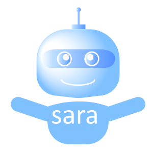

Let me present myself!
I'm Sara, your
AI Poem
1. Choose style
Random
Sonnet
Villanelle
Haiku
Ballad
Limerick
Free verse
Acrostic
Cinquain
Epic
2. Choose topic
You'll get at better result if you:
are kind to me
give a lot of specific information
don't repeat yourself
3. Submit your poem request
The Poem will be visible here
Create another poem